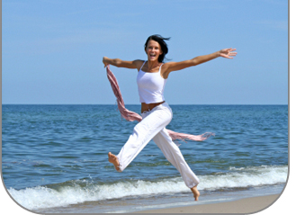
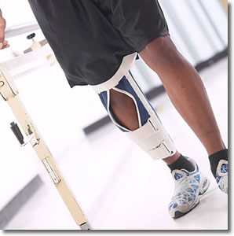

Sports Medicine
This refers to the point in recovery from an injury when a person is able to go back to play their sport or participate in an activity at a level close to that which they participated at before.
One of the goals of Sports Medicine is to try to get an athlete back into action as soon as possible. Returning to the sport or activity too soon, before adequate healing or recovery, can put you at risk for re-injury and possibly an even longer down time. 
INJURIES CAN BE CLASSIFIED IN TWO CATEGORIES:
1. TRAUMATIC INJURIES - are sudden happenings, in which you know something has gone wrong, and you feel the immediate effects of the injury, perhaps pain, swelling, bruising, or an open wound. The traumatic injury can be extrinsic, or due to some external cause, like a direct blow, a sudden twist as you change direction, or a fall. It can also be intrinsic, without an obvious cause, like the sprinter's sudden hamstring strain in a race.
2. OVERUSE INJURIES - are more subtle, because they come on simply as a gradually increasing pain, directly associated with a particular, usually repetitive, activity. Tennis elbow and runner's shin soreness are examples of overuse injuries.
PATTERNS OF RECOVERY
Tendon and muscle injuries is passive stretching to regain lost flexibility, followed by specific rehabilitative exercises concentrating on the injured muscle group, building up to a final stage of functional exercises, in which the injured muscle group works in coordination with its surrounding muscles.
Stretching the injured muscles remains an important routine for some time after you have recovered from the injury, to prevent any danger of the muscles becoming tight and then being re-injured.
For joint injuries, the pattern of rehabilitation usually consists of restoring joint mobility and strengthening exercises for the muscles around the joint, to regain stability, followed by exercises to regain joint's mobility, leading to the final stage of functional dynamic exercises. Dynamic exercises will be biased towards improving functional balance, stability, and proprioception or your body’s awareness of position and movement.
YOUR RECOVERY PLAN
Recovery from an injury involves a series of logical steps from the time of injury until you are able to get back on the court or field. Each step should be outlined and monitored by your physician and physical therapist.
During the acute phase, the focus should be on minimizing swelling. This involves Rest, Ice, Compression and Elevation, along with limitation of activities. Depending on the type and severity of your injury, treatment may also involve bracing, casting, taping or even surgery.
It is very important to maintain overall conditioning while the injury heals during this period. Reconditioning of the total body occurs due to lack of activity or loss of function. There may be a loss in strength, coordination, endurance, mobility, aerobic capacity, or balance due to the injury. These functions must be restored in order for the individual to return to past functional levels. Creative techniques can be used to safely work around the injury.
In the next phase of recovery, you should work on regaining full motion and strength of the injured limb joint. An exact plan should be outlined and monitored by your physician and physical therapist. For many injuries, gentle protective range of motion exercises can be started almost immediately. Muscle tone can be maintained with the use of electrical stimulation or simple strengthening exercises.
When strength returns to normal, functional drills can be started. This may include jumping, brisk walking, hopping, or light jogging for lower extremity injuries. Light throwing or easy ground strokes can be included for upper extremity injuries. Specific balance and agility exercises can bring back coordination that may have been lost due to the injury.
Once you have progressed with motion, strength, endurance, and agility, and are tolerating functional drills, you can try higher levels of functional tests and drills. These higher levels of functional tests and drills can now incorporate sport specific movement patterns.
Only when you are participating hard without significant difficulty and the healing has progressed to the point where the likelihood of injury is low, are you ready to return to past functional levels. During these final phases of recovery, you should be closely monitored and special attention should be given to adequate warm up before and icing after activity.
A systematic recovery plan for returning to your sport is successfully used every day, at all levels of play, from the recreational athlete to the elite professional when monitored by your physical therapist and physician.
TIPS TO REMEMBER TO SPEED YOUR RECOVERY
-
Make sure that injuries are recognized early and treated promptly.
-
After doing any necessary first-aid measures, your next priority is to obtain an accurate diagnosis of what damage has been done.
-
Participate in a full functional rehabilitation program.
DO :
R = REST - Rest the injured body part using a sling or crutches if required.
I = ICE - Apply an ice pack for 20 minutes every 2 hours to reduce blood flow and swelling.
C = COMPRESSION - Apply a compression bandage to control swelling and provide support.
E = ELEVATION - Elevate the injured body part above the level of the heart.
D = DIAGNOSIS - Seek professional advice from a doctor or physiotherapist.
AVOID :
H = HEAT increases circulation and therefore bleeding and swelling.
A = ALCOHOL thins the blood and dilates blood vessels increasing bleeding.
R = RUNNING puts damaged structures at further risk and increases bleeding.
M = MASSAGE can cause a re-bleed if performed too early.
Following these principles for 48 hours will allow your body to best begin the healing processes involved in repairing your injury. Beyond this time your rehabilitation will vary dependant on the degree and severity of your injury. You should have your injury assessed sooner rather than later to make sure you return to sport safely at the appropriate time.